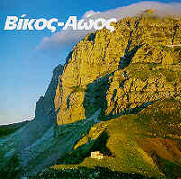
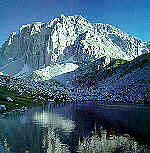
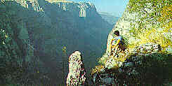

|
Ετος ίδρυσης: 1973 Εκταση πυρήνα: 3.412 εκτάρια Ο Εθνικός Δρυμός Βίκου - Αώου ιδρύθηκε με σκοπό την προστασία της άγριας φύσης που απλώνεται από το φαράγγι του Βίκου (παραπόταμος Βοϊδομάτη) μέχρι τη χαράδρα του κυρίως ποταμού Αώου και ενδιάμεση ορεινή περιοχή του βουνού Τύμφη (Γκαμήλα υψομ. 2.491 μ.).Ο έντονος κάθετος γεωλογικός διαμελισμός της περιοχής και το μεγάλο υπερθαλάσσιο εύρος της δημιούργησε μοναδικό πλούτο βιοτόπων όπου φιλοξενούνται πολλά και αξιόλογα είδη φυτών και ζώων. Ολα αυτά δίνουν στο δρυμό χαρακτήρα φυσικού βοτανικού και ζωολογικού κήπου.Αλλεπάλληλες ζώνες βλάστησης διαδέχονται η μια την άλλη από τα μεσογειακά "μακκί" και τις παραποτάμιες φυτοκοινωνίες, τις ζώνες των φυλλοβόλων δασών, μικτών και αμιγών,μέχρι τα δάση των ψυχρόβιων κωνοφόρων, τα υπαλπικά λιβάδια και τις ποώδεις φυτοκοινωνίες των βραχώδων κορυφών κα των χαραδρώσεων.Πενήντα είδη δασικών δέντρων και θάμνων και χιλιάδες μικρών φυτών παίρνουν τη θέση τους στο μοναδικό αυτό οικολογικό σύμπλεγμα του δρυμού. |
 |
|  | Ενδημικά, σπάνια και μοναδικά στη χώρα μας είδη φυτών όπως τα Valeriana epirota, Centaurea pawlovskii, Lilium carniolicum, Ramonda sebrica, Achilea abrotanoides κ.α κοσμούν το δρυμό και συγκεντρώνουν παγκόσμιο επιστημονικό ενδιαφέρον. Τα κυριότερα δάση συγκροτούνται από πλατύφυλλα φυλλοβόλα είδη γαύρων σφενδάμων, ιτιών, δρυών και άλλων δέντρων όπως ο πλάτανος, ο φράξος, η φτελιά, η φλαμουριά, η οστριά, η φουντουκιά κ.λ.π. Η οξυά και τα κωνοφόρα, κέδρο, έλατο, μαύρη και λευκόδερμη πεύκη,συγκροτούν εκτεταμένα αμιγή δάση. Οπως η χλωρίδα έτσι και η πανίδα παρουσιάζει εξαιρετική ποικιλία ειδών. Στο Δρυμό ζει η καφέ αρκούδα (Ursus arctos), ο λύκος (Canis lupus), η βίδρα (Lutra lutra) και πολλά μικρότερα σαρκοφάγα, τρωκτικά, κ.λ.π. Το αγριόγιδο (Rupicapra rupicarpa) ζει στις πιο αοροσπέλαστες βραχώδεις πλαγιές, ενώ σημαντικός αριθμός ζαρκαδιών (Capreolus capreolus) και αγριογούρουνων (Sus scrofa) διατρέφονται στα πυκνά δάση. Πλούσια είναι και η πτηνοπανίδα που περιλαμβάνει τα περισσότερα είδη που συναντά κανείς σε ένα τυπικό ορεινό οικοσύστημα, με διάφορα είδη αρπακτικών, δρυοκολάπτη και πλήθος άλλα μικρότερα δασόβια πτηνά και πουλιά της αλπικής |
|
ζώνης.Στα δύο κυριότερα ποτάμια του δρυμού ζουν αξιόλογοι πληθυσμοί
της πανίδας του γλυκού νερού, όπως ψάρια, ερπετά και αμφίβια,
έντομα κ.λ.π.Μέσα στα όρια του Δρυμού υπάρχουν ορισμένα από
τα κυριότερα χωριά του Ζαγορίου, με πλούσια ιστορία και πολιτιστική παράδοση.
Αυτά είναι το Μονοδέντρι,ο Βίκος και τα Μεγάλο και Μικρό Πάπιγγο.
Η περιήγηση μέσα στον απέραντο χώρο του δρυμού, είναι αρκετά
δύσκολη και τα μεγάλων κλίσεων μονοπάτια απαιτούν γερά πόδια,
αυθημερόν επιστροφή στα χωριά,μια και δεν υπάρχουν καταφύγια ή
ξενώνες για παραμονή μέσα στο δρυμό. |
|
(Πληροφορίες: Δ/νση Δασών Ιωαννίνων, τηλ: 0651 - 26482) Πίνακας με πλήρη αναλυτικά στοιχεία |
 |